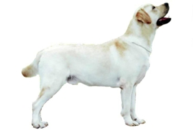
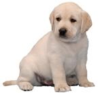

<table border="0" class="layout">
    <colgroup span="1"><col width="15%" span="1"></col><col width="25%" span="1"></col><col width="60%" span="1"></col></colgroup> 
    <tbody>
        <tr>
            <td valign="top">
                <div class="holster">
                    <div class="block_container s3 b-image txt-center " id="e_1281603240283"><span></span></div>
                    <div class="block_container s3 b-text b-static-text user_css_12816005438 " id="e_128171209643">
                        <p><strong><em><span style="color: #0000ff;">Надежда Шапаева</span></em></strong></p>
                        <p><span><span style="color: #0000ff;"><strong>Заходите к нам в </strong></span><a href="http://lordmelik.narod.ru/"><span style="color: #0000ff;"><strong>гости</strong></span></a><span style="color: #0000ff;"> </span></span></p>
                    </div>
                </div>
            </td>
            <td>
                <div class="holster">
                    <div class="block_container s3 b-image txt-center " id="e_1281712887452"><span></span></div>
                    <div class="block_container s3 b-text b-static-text user_css_127773579939 user_css_12816005438" id="e_127789249768">
                        <p style="text-align: center;"><span style="color: #008000;"><strong><span style="color: #ff0000;"><span style="color: #0000ff;">Лабрадор ретривер</span></span></strong></span></p>
                        <p style="text-align: justify;"><span style="color: #0000ff;"><span style="color: #0000ff;"><strong>Из истории породы: </strong>Л</span><span style="color: #006600;"><span style="color: #0000ff;">абрадоры-ретриверы появились не на полуострове Лабрадор, а на острове Ньюфаундленд, где рыбаки обучали их вытаскивать из ледяной воды тяжёлые сети. В 19 веке ньюфаундлендские рыбаки ездили торговать рыбой на северо-восточное (английское) побережье Канады, где время от времени и продавали своих собак. Лабрадоры сразу же обнаружили прекрасные качества подружейных собак и в 1903 году получили официальное признание британского клуба собаководства. Название "лабрадор" породе дал в 1887 году граф Малмсбери. </span><span><span style="color: #0000ff;">Лабрадор может быть разнообразных окрасов - палевые, чёрные , шоколадные. В зависимости от течения моды - на первые места по популярности лабрадоров выходят то чёрные лабрадоры, то палевые. Наиболее редкий окрас - тёмно шоколадные лабрадоры. У президента России, В.В. Путина - чёрный лабрадор, девочка, по кличке Кони. Возможно по этой причине - популярность лабрадоров не ослабевает. Но я уверен что даже после смены президента , эти собаки будут и дальше радовать взрослых и детей, и будут членами семьи.</span> </span></span></span></p>
                        <p style="text-align: justify;"><span style="color: #006600;"><span style="color: #0000ff;"><strong>Общая характеристика:</strong> самый популярный из ретриверов - лабрадор прославился своими разносторонними талантами. Эти подружейные собаки прекрасно работают в воде и на суше, их используют в полиции<span>. Но не подумайте чего плохого - трудяги лабрадоры в полиции , да и в милиции то же, работают в основном в поиске наркоты и взрывчатки. Лабрадор -это практически безобидная собака, которая не в состоянии навредить человеку. Конечно встречаются некоторые отдельные собаки, которые могут кусаться, ходят на ЗКС и даже показывают чудеса при задержании "нарушителей". Но это - исключение из правил. Лабрадор -это одно из самых покладистых домашних животных, которое излучает неограниченное количество любви, радости, и преданности. Лабрадор просто не оценим </span>в качестве поводырей для слепых<span>! Нелёгкий труд собаки поводыря по праву вознаграждается любовь владельца. Лабрадора не возможно не полюбить. В</span> семье <span>лабрадоры </span>- всеобщие любимцы. Лабрадоры - добрые и уравновешенные собаки, необыкновенно преданы детям. Всегда готовы<span>е </span>служить хозяину и <span>"</span>защитить<span>" </span>его от врагов<span> громким лаем! </span><span>Хотя если лабрадор общается с другими собаками, как например у нас в&nbsp; питомнике "Аманауз" - то охранные собаки могут "научить" лабрадоров охранять территорию - лабрадоры вместе с овчарками будут с огромным энтузиазмом бегать по территории, лаять и изображать охранников.&nbsp; Но в основной своей массе - это с</span>покойные, добродушные, общительные и послушные собаки.</span></span></p>
                        <p style="text-align: justify;"><span style="color: #006600;"><span style="color: #0000ff;"><strong>Содержание и уход:</strong> лабрадора необходимо выгуливать не менее часа в день, давая ему возможность свободно бегать. Регулярная чистка щёткой поддержит шерсть в хорошем состоянии.</span></span></p>
                        <p style="text-align: justify;"><span style="color: #006600;"><span style="color: #0000ff;"><strong>Размеры:</strong> 56-58 см (кобели), 54-56 см (суки).</span></span></p>
                        <p style="text-align: justify;"><span style="color: #006600;"><span style="color: #0000ff;">________________________________________</span></span></p>
                    </div>
                </div>
            </td>
        </tr>
    </tbody>
</table>​
